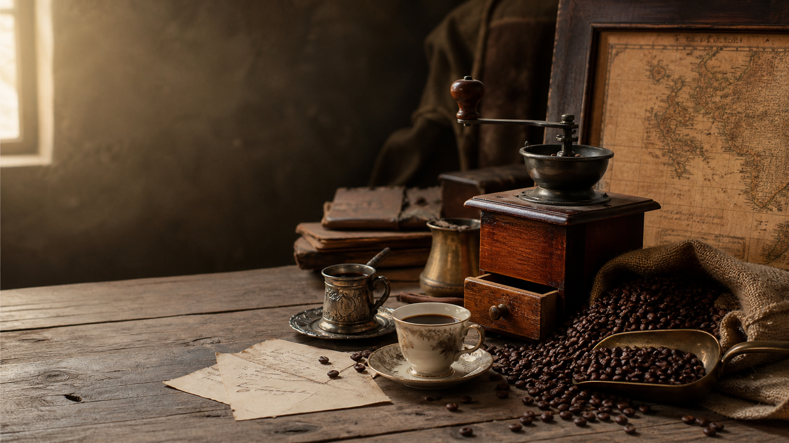

咖啡的起源
关于咖啡起源的传说与考古发现
埃塞俄比亚传说
相传在公元9世纪，埃塞俄比亚高原的牧羊人卡尔迪发现他的羊群在食用了一种红色浆果后变得异常活跃。他将这一发现告诉了当地的修道院，修士们尝试将这些浆果制作成饮品，发现能够帮助他们在长时间的祈祷中保持清醒。
这个传说中的"卡尔迪传说"被认为是咖啡发现的起源故事。虽然无法考证其真实性，但它生动地描述了咖啡因提神醒脑的作用。
考古学证据
考古学家在埃塞俄比亚的考古发现表明，早在公元10世纪左右，当地人就已经开始使用咖啡果实。在一些古代遗址中发现了咖啡豆的残留物，证明咖啡在当时已经被当作食物或饮品使用。
咖啡的学名"Coffea"来源于埃塞俄比亚的古地名"Kaffa"，这也印证了埃塞俄比亚作为咖啡发源地的地位。
